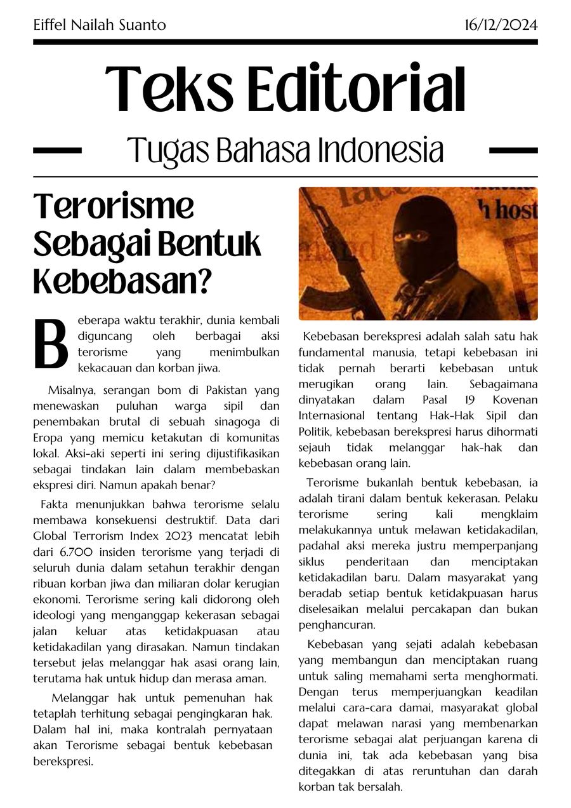
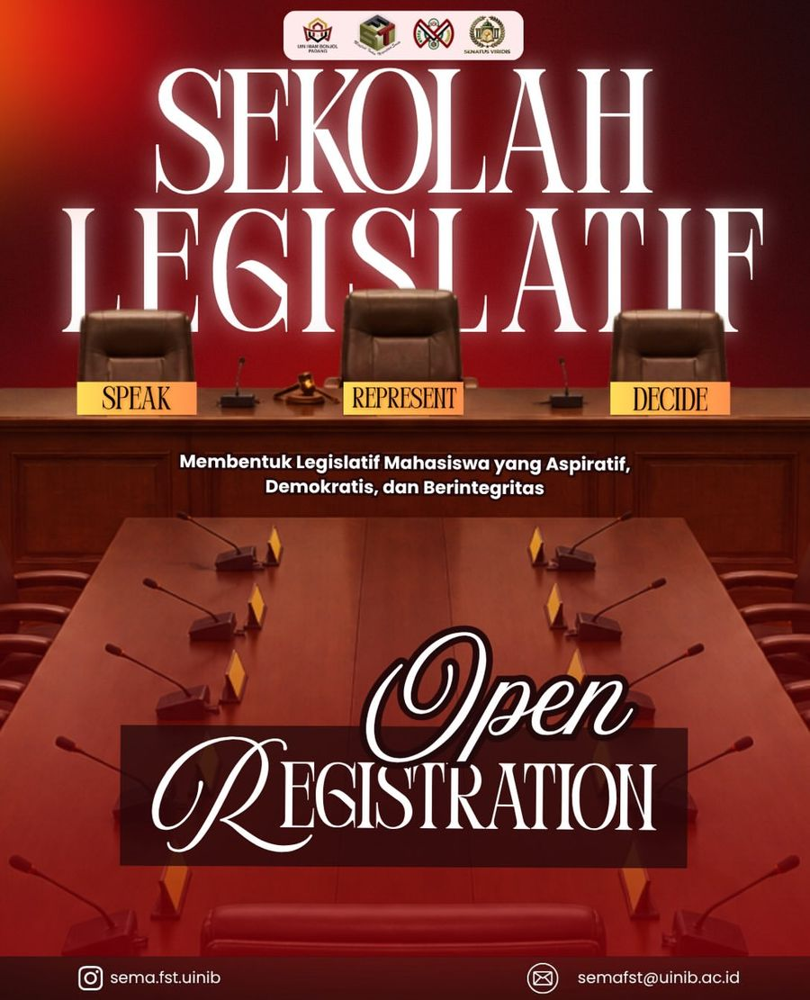
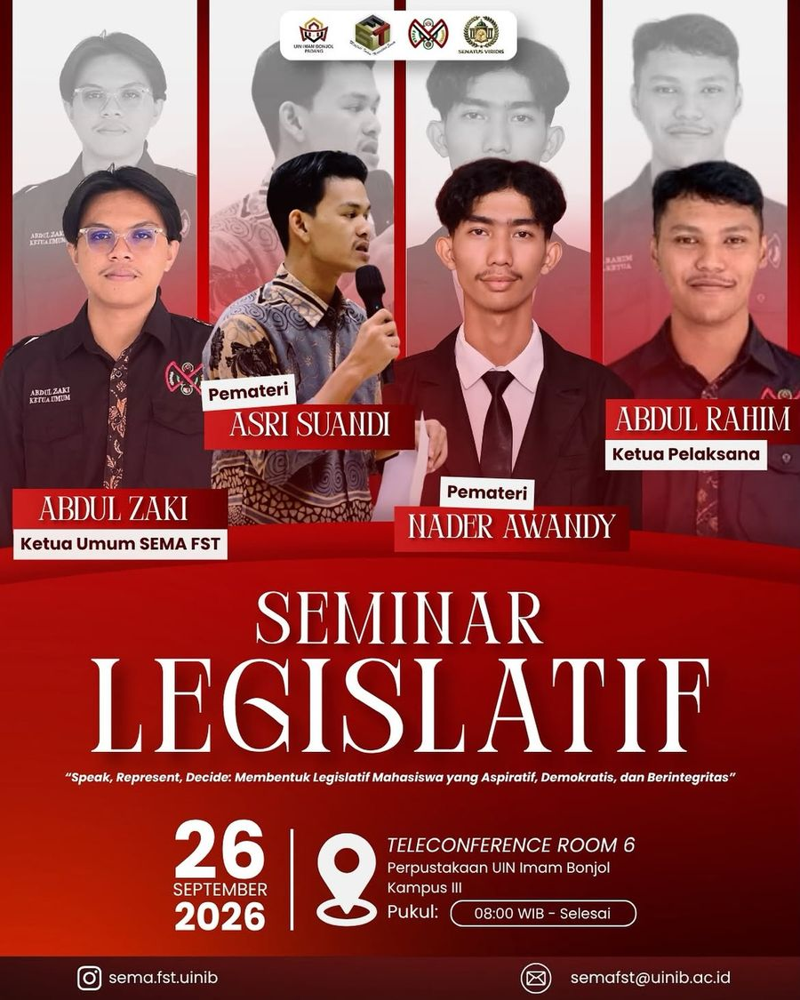
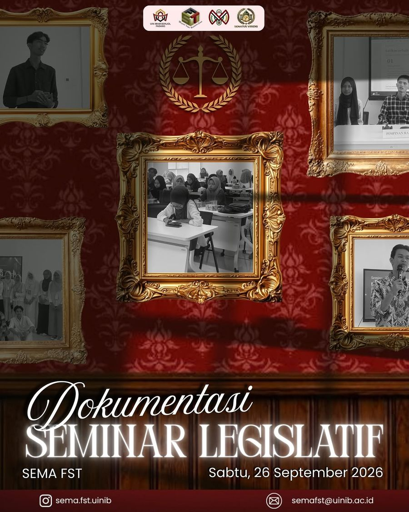
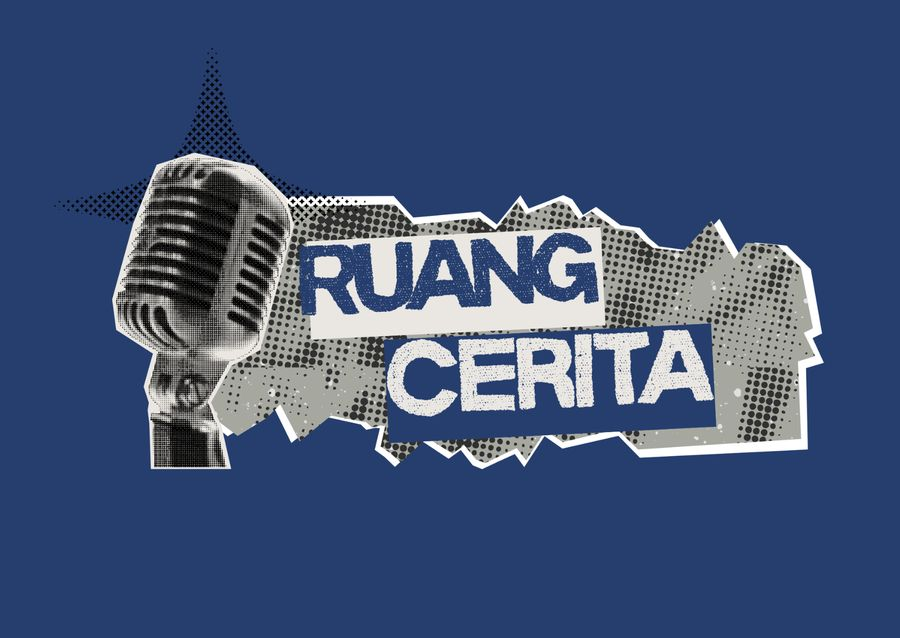

Review film
Into the Wild
Alam ini ada bersama kita bukan untuk sekedar dilihat dan dimanfaatkan, tapi untuk dihubungkan.
Membahas narasi, kamera yang menjaga jarak, dan gaya hidup Alexander Supertramp.
Perempuan yang terlena dengan seni berbicara lewat makna.
Sistem Informasi, semester 3, UIN Imam Bonjol Padang
Menulis, melapor, dan tampil di depan kamera.
Menulis "tertarik" saja rasanya kurang kuat untuk dijadikan alasan. Tapi saya memang suka menulis, dan terus belajar berbagi lewat tulisan.
Lebih dari itu, saya percaya penyampai berita punya dampak besar pada perubahan. Apa yang mereka sampaikan bisa mengubah apa yang orang pikirkan. Itu tantangan besar, dan saya ingin terlibat di dalamnya.
Di mana-mana, pers adalah tombak pergerakan. Di kampus, Suara Kampus adalah tempat yang paling tepat untuk belajar bagaimana pers bekerja, dari menulis sampai berbicara di depan kamera.
Artikel populer, tugas Bahasa Indonesia
Data berbicara jauh lebih keras daripada idealisme budaya.
Artikel ini membandingkan ungkapan "anak adalah anugerah" dengan hasil Survei Nasional Pengalaman Hidup Anak dan Remaja 2018: 36,43% anak laki-laki dan 19,35% anak perempuan usia 13-17 tahun pernah mengalami kekerasan fisik. Dari sana tulisan bergerak ke krisis fatherless, bentuk-bentuk kekerasan, dan peran orang tua, sekolah, serta negara.

Review film
Alam ini ada bersama kita bukan untuk sekedar dilihat dan dimanfaatkan, tapi untuk dihubungkan.
Membahas narasi, kamera yang menjaga jarak, dan gaya hidup Alexander Supertramp.
Review serial
Pernah dengar cerita tentang persahabatan 5 orang demonstran yang masing-masing punya alasan untuk ikut ke jalan yang salah?
Ulasan drama Thailand tentang kesenjangan, hukum, dan ruang demokrasi.
Catatan
Kurikulum kita menuntut murid berpikir kritis, tapi tidak pernah diajarkan caranya.
Catatan pribadi tentang pendidikan, politik, dan film. Asal-asalan, tapi tersusun.
Cerpen
Yang harus dirubah bukan orang-orang miskin, melainkan masyarakat yang menutup mata pada itu semua.
Dua aktivis berdebat soal kemiskinan dan kesehatan jiwa di layar kaca.
Cerpen
Kau terlalu kecil untuk bisa mengomentari dunia. Tumbuhlah besar dahulu yaa.
Fiksi berlatar London 1980, disusun dari berita-berita zaman itu.
Puisi
Ketika sujud mulai terasa panas,
Kukatakan kepadaku,
"Duduklah dan mari kita bahas,
Hal-hal terkait tumpahan tinta di bahumu."
Dan aku pun kembali terhempas
Pada masa-masa sebelum aku tahu
Tulisan yang dulu terbit di channel Telegram, tersimpan sebagai gambar. Klik untuk melihat utuh.
Seluruh tulisan yang sudah terkumpul, bisa dibaca utuh. Klik judulnya.
Saya membuat, menyunting, dan memainkan drama pendek di channel YouTube saya. Sebagian besar berawal dari tugas kuliah, termasuk pengolahan audio dan penyuntingan video.
Adaptasi modern dongeng Malin Kundang dengan tokoh utama perempuan.
Tonton di YouTubeAdaptasi cerpen "Deformasi" karya nona-hujan di Wattpad.
Tonton di YouTubeDrama edukatif tentang praktik sidang, dengan cerita orisinal.
Lihat di channelSaya menjadi bagian PDD pada Seminar Legislatif SEMA FST, 26 September 2026, dan mendesain beberapa materi publikasinya.




Alat: Canva, Ibis Paint X, CapCut, Microsoft Office.
Selain mengurus kesekretariatan divisi, saya mengelola dua akun Instagram:
Rabu, 2 Februari 1980 di London
Siang ini, London tidak seramai semalam. Meski berita heboh tentang Kedutaan Besar Spanyol di Guatemala yang diserang dan dibakar hingga menewaskan 36 orang ini masih jadi perbincangan hangat warga Amerika, tapi mobil-mobil dan kota tidak seheboh yang lalu.
sebuah Pontiac Firebird Trans Am SE berhenti di depan toko Hobby Fair dan seorang anak lelaki kecil keluar dari mobil itu dengan langkah kecilnya. Mobil berotot yang boros minyak itu memang sedang naik daun akhir-akhir ini, jadi wajar jika akan banyak ditemukannya mobil berotot di belahan Amerika lainnya.
Sang anak kecil itu, namanya Johnny, pemuda kecil 9 tahun yang akan mengunjungi Hobby Fair untuk melihat peluncuran mainan Rubik kesukaannya. Sejujurnya, debut Rubik, mainan kotak-kotak itu di berbagai toko mainan Amerika seperti British Toy atau Hobby Fair dilakukan beberapa hari yang lalu, tepatnya tanggal 29, namun Johnny tau, jalanan akan ramai di hari pertamanya, hingga ia ada di sini hari ini.
Kaki mungilnya membelah jalan, melewati trotoar jalan dan masuk ke toko itu dengan gandengan tangan pada ibunya. Saat masuk melewati pintu, pakaian Korduroi nya tersangkut di kayu pintu tersebut sehingga mengakibatkan adanya sedikit sobekan kecil di baju Korduroi nya. Sang ibu yang melihat itu hanya tertawa kecil. Lucu melihat anaknya.
Menjeda sejenak dari rutinitas mereka, ada tayangan dari Sharp sebelah, tapi bukan sekedar ramalan cuaca apalagi seri Half-blood seperti yang biasa ada di Televisi rumah. Ini berita politik, terlalu keji untuk dipahami Jhonny, tentang perseteruan personel FBI yang menargetkan anggota kongres Amerika serikat dalam pertempuran sengit serta kabar Kerusuhan di penjara bagian New Mexico yang menewaskan 33 narapidana serta mengakibatkan 100 narapidana luka-luka.
Dunia ini memang rumit. Setiap hari berita bencana hilir mudik mondar-mandir televisi, kabar perseteruan ini dengan itu terus menambah bahkan tidak ada kurangnya. Kalian tahu jalur rel kereta api tersukses di Amerika? itu Chicago, Rock Island dan Pacific Railroad, tapi tahukan kalian? Hutang menderai dan beberapa hari lalu mereka dilikuidasi. Bagaimana dengan kabar Israel dan Mesir yang menjalin hubungan... dimana harga diri dan apresiasi perjuangan Anwar Sadat? sang peraih Nobel perdamaian? Lalu dengan kapal Blackthorn dan pelarian 6 diplomat Amerika? Huh... dunia ini sudah kebanyakan bencana.
Jhonny diam, memandang dalam kemudian berkumandang, "Apa gunanya hidup di dunia? Televisi saja selalu menayangkan berita duka. Apa ada kabar bahagia disana? tentang perdamaian antar negara dan toleransi kulit putih dan hitam? Tak ad---"
"Nak, Tuhan selalu buat takdir yang sebelumnya gak pernah kita duga. Apapun yang awalnya jauh dari kata mungkin bisa langsung tiba-tiba ada di depan mata. Hidup kita adalah sebuah teka-teki, kita tidak tahu apa tapi semua mempunyai jawabannya masing-masing. Suatu saat, kemungkinan itu bakalan ada, tunggu sampai kau dewasa yaa, mungkin setelahnya akan ada perdamaian seperti yang kau katakan," suara seorang paman dari samping Jhonny menginstruksi, memotong kalimatnya. Paman itu berdiri tegak dengan topi hitamnya serta kemeja kotak-kotak miliknya. Di mulutnya ada sebatang rokok, dia memainkannya sebelum kembali berkata, "dan nak, kau terlalu kecil untuk bisa mengomentari dunia. Tumbuhlah besar dahulu yaa." Lalu menjadi kenangan.
... lalu sekarang, ternyata 1980 masih tertinggal.
Tubuhku masih belum pulih. Batuk. Dan kini ditambah dengan demam yang berkepanjangan hingga dua hari terlewati. Obat dan minuman Herbal adalah makanan yang terus lidahku cicip setiap saat.
Menengok sebentar ke acara Televisi yang menyala. Ada dua orang aktivis politik yang tengah berdiskusi atau mungkin berdebat tentang masalah kemiskinan yang terjadi di Indonesia.
Sejujurnya melihat acara seperti ini cukup membosankan, karena hanya akan berakhir dengan segala kritik yang kukeluarkan karena para manusia yang menyebut dirinya sendiri pembela bangsa tanpa janji kosong itu tidak lain adalah manusia yang menderita two face haha. Hanya membawa citra juga imej positif di depan layar dan berakhir bejat di dunia asli.
Tapi sepertinya aku salah. Karena seorang yang terlihat lebih muda diantara mereka menyuarakan pendapatnya tentang Kemiskinan dan Psikologi.
"Kemiskinan dan kesengsaraan menjadi alasan kuat mengapa generasi sakit jiwa lahir di Indonesia. Kedua hal tersebut menyebabkan gangguan intelektual atau ribuan gangguan jiwa lainnya semakin parah dan sukar diatasi. Sebenarnya itu bukan satu-satunya penyebab banyak manusia yang harus memasuki ruangan di rumah sakit jiwa, karena kebanyakan itu berasal dari rasa kesepian, kesendirian atau rasa cemas yang berlebihan. Tapi tetap saja, intensitas nya terus melonjak naik setiap tahunnya. Itulah susahnya hidup di negara yang masih menganggap orang miskin juga orang keterbelakangan mental adalah budak." Ungkapnya lengkap.
Acara diskusi ini semakin menarik ketika yang terlihat lebih tua bersuara. "Dimana konteksnya? Oh maaf, munkin ada sedikit keberatan diantaranya, tapi saya akan melanjutkan." Ada jeda yang dibuat lelaki yang lebih tua itu sebelum kembali bersuara. "Ribuan orang Indonesia berada dalam Zona ekonomi terendah setiap harinya. Makan seadanya dan begitulah selanjutnya. Tapi, antara ribuan orang itu, intensitas yang mengalami gangguan jiwa hanya sedikit karena kebanyakan dari mereka memperjuangkan ekonomi nya. Dan tentu saja, Indonesia sedang berusaha keras mengurangi kemiskinan yang mendera di masyarakat. Kalimat terakhir yang anda ucapkan seolah-olah menyalahkan Indonesia. Padahal anda sudah mengetahui seberapa besar perjuangan Indonesia mengatasi itu semua."
Jika kedua orang itu adalah Leonardo Da Vinci dan Michaelangelo maka aku sekarang adalah Nietzsche yang dengan kejamnya akan mengkritik salah satu dari mereka. Tentu saja bukan Leonardo, karena hampir semua pecinta seni terutama karya Leonardo akan tahu jika Nietzsche adalah pemuji karya Leonardo. Dan, Leonardo yang kumaksud adalah Aktivis muda itu.
Aku kembali memfokuskan diri pada tayangan di depan. Mengabaikan tenggorokan ku yang sudah sangat gatal.
"Bukan menyalahkan karena yang saya katakan bukan sekedar bualan, melainkan fakta dengan bukti yang sudah banyak. Ketika anda berkata kepada orang lain jika anda ingin menjadi seorang dokter di rumah sakit jiwa, reaksi apa yang akan mereka berikan. 9 dari 10 akan tertawa mencemooh. Itu sudah harga mati. Kita hidup di Indonesia. Negara yang setiap harinya akan muncul berita tentang pembunuhan antar keluarga, Korupsi digolongan Selebritis juga Petinggi negara, Pencurian benda berharga, Pelecehan seksual dibawah usia, juga kasus Kecelakaan kendaraan di jalan raya. Di negara ini, Kemiskinan meningkat pesat dan Kegilaan berkembang biak terlalu cepat. Segala usaha untuk mengurangi kemiskinan tidak ada gunanya lagi. Hanya kegagalan yang didapat. Masyarakat yang mengaku waras dan hidup berkecukupan menjadi anti-empati pada orang golongan rendah juga berpenyakit mental. Yang harus dirubah bukan orang-orang miskin, melainkan masyarakat yang menutup mata pada itu semua. Negara yang bahagia bukan diukur dari kemansyuran lahannya, luasnya wilayahnya, pintarnya masyarakat nya ataupun kekayaan yang dimiliki negaranya, namun kebahagiaan negara diukur dari kesetaraan pandangan rakyatnya dan kedamaian yang ada di tengah-tengah lingkungannya." Akhir aktivis muda itu setelah berkata panjang.
Entri 1 #Sikarius
"Target terkunci, siap menembak."
Pistol sudah ditangan, titik bidik sudah anteng menunggu sentuhan. Subjek juga duduk tenang, menyesap kopi kanan kiri pegang koran, tidak perlu repot-repot pindah tempat.
"Diarahkan. Satu…"
Anggap saja ini drama Korea romantis ala-ala, karena target membubuhkan tawa renyah layaknya Heroine di cerita fiksi remaja, dan pelaku mulai tercerai berai fokusnya.
Ada helaan panjang sebelum, "Dua…"
Dan sudahi saja acara pembunuhan tidak jelas ini.
"Saya berhenti dari misi."
tuh, pelakunya sedang jatuh cinta.
Entri 2 #Kisah Laut Biru
Aku menilik, melihat ke atas langit, dimana katanya ada surga disana. Kemudian merenung, sambil curi-curi doa, "semoga semuanya bahagia," dengan tawa yang diselipkan setelahnya.
Belum sempat mencicip Ilham nya, tiba-tiba pertanyaan tak tahu malu keluar, tentang apakah aku bisa bersamanya? yah, walaupun padahal sudah kutahu apa jawabnya.
Raya selalu berdoa, tapi tidak pernah tau pada siapa dia berdoa. Bertahun-tahun ia cari siapa pencipta ruh nya, karena bertanya bapak pun tak ada gunanya. Abang nya juga sakit jiwa, media ponsel tak tersedia, hanya buku di perpustakaan yang bisa dibaca.
Ada banyak "versi" Tuhan yang telah ia baca, tapi rasa-rasanya dia lebih suka percaya pada Tuhan murah hati yang bisa mengubah anggur menjadi air, membelah laut dengan tongkat dan bunda penyayang nya yang menawan nan suci.
Jadi ia mulai mencoba, tanpa modal izin orang tua, karena takut hantaman telapak tangan bapak.
Gereja pun mulai dijajah, bertemu syair indah yang menyiram jiwa, menumbuhkan iman. Kemudian, ada kalanya ia terpesona, apalagi pada lelaki yang selalu duduk di bangku ujung kanan depan. Tak ada rencana sebenarnya, tapi ternyata ada relativitas waktu dan ruang yang menjaring keduanya; di Alkitab itu disebut takdir.
"Hai," seperti drama klasik remaja legendaris, Raya menyapa. "Kenapa kita punya Tuhan yang sama?"
Dan begitulah mulanya. Kisah Raya, anak bawang yang baru dibaptis bulan lalu, dan Tian, laki-laki religius yang bisa jalan-jalan melalang buana di hati Raya.
Entri 3 #Para Penumpang Bidar; dan kisah sang Gahara
Katanya dunia sedang porak poranda, dibentangi perang dingin antar bangsa, inflasi dan krisis ekonomi, pembantaian kepercayaan kaum komunis, dan banyak lagi.
Aku berdiri diantaranya, menjadi demonstran sok tau isi bumi, berteriak "PERGI KEMANA KEADILAN NEGERI INI?!" seolah-olah kekurangan kaki untuk berdiri.
Entri 4: Europe Skies
Prancis, Jerman, Belanda, Inggris. Semua tempat di Eropa memberi tempat bersenang-senang.
Mulai dari menyapa Prajurit Britania, mencari kesedihan di Finlandia, makan Croissant di Portugal, melewati ombak Malta, membaca buku di perpustakaan Athena, menjenjangi Gereja tua di Roma, sampai mencium harum salju serta Kriminalitas di Swiss dan Andorra.
Raya ingin melihat semua sisi langit di Eropa, mencicip berbagai macam rasa udara di tempat Ibunya singgah di dunia. Setidaknya dia sudah siap untuk semua rintangan yang ada, kecuali mungkin, wangi harum roti panggang dari Toko Bennett's Bread dan Tarian Jalanan dari trotoar Polandia.
Mereka sama-sama menoleh, mata bertemu mata, bertatapan dalam diam. Angin pantai mendamaikan, membawa sejuk di antara pemandangan laut di depan, sebelum Azzari tersenyum, "mau terjun?" katanya.
"Berenang?"
Azzari menggeleng, "tenggelam."
Bobot dari kata tadi tidak lagi ada artinya, karena Ikari hanya tertawa sebagai balasan. "Kemudian berpelukan?"
Azzari menaruh dua jari nya di dagu, menggosok gosokkan nya sebentar. "Boleh," katanya lugas.
"Terus nanti nyari ikan di kedalaman?"
"Kalau kamu sanggup bisa aja sih."
Ikari tertawa. "Gila kamu. Tuhan bertanya tanya lihat tingkah kamu gini."
"Yaudah jawab aja biar Tuhan mengerti."
"Manabisa gitu," jawabnya diselingi tawa. "Kan bukan mulut yang jawab, tapi hati."
"Kalau gitu sama."
Ikari memiringkan kepalanya, isyarat tidak mengerti. "Apanya yang sama?"
Bukannya menjawab, Azzari beralih mengambil kerikil kecil disampingnya; guna diobservasi kemudian dilempar sia-sia ke laut.
"Ajakan tadi, Ikari." Azzari menoleh, "sama-sama dari hati, bukan sekedar candaan bibir."
Sekali lagi, mata bertemu mata, bertatapan dalam sunyi, dan diam-diam mengerti bahwa netra tidak bisa lagi berucap bohong.
"Jangan mati dulu, kamu belum jadi musisi, aku juga masih belum jadi hakim, bibi ku masih jadi budak, dan orang tuamu masih memuja kertas cetak. Masih banyak yang belum terjadi, jadi jangan pergi dulu, walaupun kedepannya nanti kita sudah tidak lagi sama." Ikari, tanpa menoleh, menggenggam tangan pria disampingnya, menekannya seolah-olah ada harapan disana. "Tolong tetap hidup, setidaknya untuk gitarmu di studio, untuk sepatu favorit mu, untuk mie yang masih sering kau santap tengah malam… dan untukku."
"Kamu bukan tempat singgah, kamu Rumah. Aku tidak mampir, datang semauku atau kapanpun aku butuh, aku tinggal, menetap selamanya, membuat perasaan kekal di dalamnya."
"Hei, rumah itu cuma tempat, singgah ataupun tinggal, kapanpun bisa pindah. Kamu bisa punya Rumah baru suatu saat nanti, jadi jangan kekalkan perasaanmu padaku, karena kamu harus bijak, suatu saat, cepat atau lambat, Rumah ini akan hancur."
Mereka terlalu takut untuk saling merengkuh. Yang satu merasa terlalu rendah, sedangkan satunya merasa terlalu tinggi. Benak mereka terbagi menjadi 2 pilihan; Pantas? ataukah Lancang?
"Tidak papa, mereka pasti akan mengerti nanti."
"Ini bukan soal mengerti atau tidak mengerti. Dari awal waktu kamu bilang kita bersama, mereka pasti paham dan mengerti dengan jelas soal hubungan kita. Mereka sudah punya nalar. Kita hanya… tidak diterima."
Rasanya sakit. Semua makanan yang masuk bagai berubah menjadi sekelompok bandit dengan pisau dan pedang, mengoyak habis lidahnya, membelah sepanjang kerongkongan nya.
Lalu dia bertanya tanya, apa sistem pencernaannya juga sudah rusak? Karena sepertinya, semua makanan tadi-- sekelompok bandit tersebut, alih alih masuk ke Lambung, memilih untuk terjun ke Jantung. Memberatkannya, sampai sampai terasa hendak jatuh. Sakit dan perih pun menjadi satu, menumpuk menjadi racun pilu.
Tidak. Bukannya ia tak ingin makan, ia hanya tak sanggup menelan.
Tetesan air menguyur, membasahi dua manusia yang saling berbagi rasa perih. Satu hamba berjalan dengan kaki penuh paku, satunya lagi menempel di punggung sekeras kayu, tangan memeluk tungkai bawah dagu, sudah tak lagi sanggup menahan berat tubuh.
Saat itu malam tengah sunyi nan gelap, tidak ada bintang ataupun bulan yang menyembul keluar. Bahkan malam pun seolah-olah juga takut pada kehadiran keduanya, seolah-olah tidak menerima.
Keduanya, di bawah hujan, sambil menggendong dan digendong, menatap jalan raya. Berpikir, kenapa tak ada saja mobil yang lewat dan menabrak mereka. Sudah terlalu lelah jiwa jiwa ini, hendak menghadap yang kuasa saja--- atau mungkin tidak, karena mereka akan masuk neraka. Tapi bodoh lah, pikir mereka lebih baik disapa iblis ketimbang dihina di tanah dunia.
Dan begitulah waktu berlalu. Dua manusia. Satu terlampau lelah, dan satunya terlampau peka, menyadari bahwa air yang membasahi bahu kirinya, bukanlah air hujan semata.
Sebelum mereka mati, Azari mempererat pelukannya pada jiwa beku Ikari. Matanya terbuka, dia tersenyum.
Sebelum mereka mati, Ikari membenamkan kepalanya lebih dalam pada tubuh dingin Azari. Matanya terpejam, dia tersenyum.
Dalam sebuah pelukan hangat, mereka tersenyum, sebelum mereka mati.
Ini seperti kita berada pada ruang yang sama, namun dimensi yang berbeda.
The first time he's falling love is the first time he's falling apart
"Aku jatuh cinta pada orang yang aku mau cintai, bukan pada orang yang sebaiknya aku cintai. I don't love him just because I should, I love him because I could. It's not like I'm falling in love with the one people recommend, but with the one I choose."
Ketika sujud mulai terasa panas,
Kukatakan kepadaku,
"Duduklah dan mari kita bahas,
Hal-hal terkait tumpahan tinta di bahumu."
Dan aku pun kembali terhempas
Pada masa-masa sebelum aku tahu
"What's the point of saving everyone when i couldn't even save you."
Kita berdiri goyah di Perahu
Menatap Pulau berpasir tanpa pohon kelapa
Setidaknya ada Sahara, daripada tidak ada
Aku membawa mahkota
Duduk di ujung tanduk, menjadi Gahara
Kamu menyingsing pedang
Mendayung dayung, menjadi Putra Ksatria
Harapan mempertemukan kita
Menjadi pengemis mimpi, tanpa masa depan
Harapan mengikat kita
Jatuh Cinta, tanpa diterima
Kita diasingkan, ditolak sosoknya
Jadi kaburlah dengan sampan, meninggalkan dunia norma
Aku, Kamu
Saling menggenggam
Sampai-sampai membuat ruam
Kamu, Sayang
Terlalu lelah
sampai-sampai memilih tenggelam
Harapan mempertemukan kita
Menjadi pengemis mimpi, tanpa masa depan
Harapan mengikat kita
Jatuh Cinta, tanpa diterima
Kita diasingkan, ditolak sosoknya
Jadi kaburlah dengan sampan, meninggalkan dunia norma
Kita, Cinta
Berakhir terpisah
Sampai-sampai sesak dadanya
Aku, Cundang
Selalu rindu
Sampai-sampai ingin mati rasanya
Ini kisah roman sakit Jiwa
Antara putra ksatria yang kalah
dan Gahara yang selamat sampai Pulau sendirian
Harapan mengikat kita
Jatuh Cinta, tanpa diterima
Patah, Patah
Rindu, Rindu
Kita, Para penumpang Bidar
Istilah ‘anak adalah anugerah’ kerap kali kita dengar melalui bibir masyarakat Indonesia. Kalimat singkat ini selalu diagung-agungkan maknanya, menempatkan anak sebagai titipan suci yang membawa berkah. Idealisme ini bahkan membentuk sebuah budaya yang sangat mendukung pernikahan dan berketurunan, menjadikan Indonesia sebagai salah satu negara berpopulasi tinggi di dunia. Dalam banyak tradisi, memiliki anak dianggap sebagai puncak kesempurnaan dan penerus garis keluarga.
Namun, apakah budaya ini diimbangi dengan pengoptimalan lingkungan yang layak dan aman untuk tumbuh kembang anak secara fisik dan psikologis? Sayangnya, fakta di lapangan menunjukkan kontradiksi yang menyakitkan. Data berbicara jauh lebih keras daripada idealisme budaya. Berdasarkan hasil Survei Nasional Pengalaman Hidup Anak dan Remaja (SNPHAR) tahun 2018, prevalensi kekerasan fisik pada anak umur 13-17 tahun mencapai angka yang mengkhawatirkan: 36,43% atau hampir 1 dari 3 anak laki-laki pernah mengalami kekerasan fisik selama hidupnya. Sementara itu, pada anak perempuan, angkanya mencapai 19,35% atau 1 dari 5 anak perempuan pernah mengalami kekerasan fisik. Betapa kontradiktifnya fakta ini dengan istilah "anugerah" yang selalu digaungkan. Jurang lebar antara harapan sosial dan realitas data ini menunjukkan adanya krisis kesejahteraan anak yang tersembunyi.
Ironi ini semakin diperparah dengan realitas sosial lain yang sangat memengaruhi ekosistem pengasuhan, yaitu krisis Fatherless. Indonesia dilaporkan menempati posisi kedua sebagai negara fatherless terbesar di dunia. Istilah ini merujuk pada minimnya atau bahkan tidak adanya peran Ayah secara emosional dan pengasuhan dalam kehidupan anak, meskipun mungkin secara fisik Ayah hadir. Di banyak keluarga, peran Ayah masih dibatasi pada fungsi tunggal sebagai pencari nafkah (breadwinner), sementara tanggung jawab pengasuhan dan pembinaan emosional sepenuhnya dilimpahkan kepada Ibu. Minimnya keterlibatan Ayah dalam pengasuhan berdampak signifikan pada perkembangan emosi, perilaku, dan identitas diri anak. Lingkungan masyarakat yang tidak ramah terhadap tumbuh kembang anak, baik karena kekerasan langsung maupun pengabaian peran, adalah cerminan kegagalan kolektif kita dalam menjamin hak dasar mereka.
Jika ditelaah dari pengertiannya, kekerasan pada anak adalah semua perlakuan yang menimbulkan sakit secara fisik, atau yang mengganggu perkembangan psikologis, emosional, dan sosial anak. Dalam konteks ini, kekerasan tidak hanya sebatas tindakan aktif yang menyakitkan, tetapi juga mencakup tindakan pengabaian dan penelantaran anak. Orang tua yang seharusnya menjadi tempat ternyaman dan teraman bagi anak-anaknya, melalui tindakan atau kelalaiannya, malah justru menjadi "monster mengerikan" bagi perkembangan mereka. Kekerasan yang dialami pada masa kanak-kanak akan meninggalkan jejak neurologis dan psikologis yang bertahan hingga dewasa, memengaruhi cara mereka membentuk hubungan, mengelola emosi, dan memandang diri sendiri.
Bentuk-bentuk kekerasan itu sendiri sangat beragam dan dampaknya memerlukan analisis mendalam. Pertama ada kekerasan fisik adalah bentuk yang paling banyak dikenali, mulai dari hal-hal yang dianggap "remeh" seperti menjewer, mencubit keras, mendorong, menendang, hingga tindakan memukul yang menyebabkan cedera atau nyeri serius. Dalam banyak kasus, kekerasan fisik yang berulang dapat memicu Sindrom Anak yang Dipukuli (Battered Child Syndrome). Dampak yang ditimbulkan bukan hanya luka fisik yang sementara, melainkan juga gangguan perkembangan kognitif, penurunan fungsi eksekutif otak, perilaku agresif yang ditiru dari pelaku, dan penurunan motivasi belajar yang signifikan. Rasa sakit fisik diterjemahkan menjadi trauma emosional bahwa dunia adalah tempat yang tidak aman.
Lalu ada kekerasan Verbal dan Emosional yang ering dianggap sepele. Kekerasan verbal meliputi penghinaan, ejekan, ancaman, membentak, dan merendahkan harga diri anak. Penggunaan frasa umum seperti "kamu tidak berguna," "dasar bodoh," atau "lebih baik kamu tidak ada" bersifat destruktif. Kata-kata negatif ini secara perlahan membentuk citra diri anak yang rendah (low self-esteem). Secara neurobiologis, ancaman verbal memicu pelepasan hormon stres (kortisol) secara berlebihan. Dampak jangka panjangnya berupa rasa rendah diri yang kronis, isolasi sosial, kesulitan regulasi emosi, dan meningkatkan risiko gangguan mental seperti depresi dan kecemasan di usia dewasa. Anak korban kekerasan verbal seringkali menginternalisasi kritik tersebut sebagai kebenaran mutlak mengenai diri mereka.
Selanjutnya adalah kekerasan yang dampaknya adalah trauma psikologis jangka panjang. Bisa berupa kecemasan kronis, kecenderungan untuk melakukan self-harm (melukai diri sendiri), ketidakpercayaan mendalam terhadap orang dewasa (khususnya figur otoritas), dan kesulitan membentuk hubungan intim yang sehat dan aman di masa depan. Korban seringkali bergumul dengan rasa bersalah, malu, dan disasosiasi, di mana tubuh mereka terasa asing dan tidak dimiliki. Perlindungan dan rehabilitasi psikososial yang intensif mutlak diperlukan untuk membantu korban pulih dari luka tak terlihat ini.
Tindakan pengabaian juga termasuk dalam kategori ini. Sebuah hal yang terjadi karena gagalnya orang tua memenuhi kebutuhan dasar anak, baik itu kebutuhan fisik (makanan, pakaian, kesehatan, pendidikan) maupun, yang paling merusak, Pengabaian Emosional. Pengabaian emosional adalah kegagalan merespons kebutuhan anak akan kasih sayang, validasi emosi, dan rasa aman. Dampaknya sangat signifikan bagi psikologis anak, terutama dalam membentuk Gaya Keterikatan. Anak yang diabaikan cenderung mengembangkan gaya keterikatan yang tidak aman (misalnya, avoidant atau anxious), yang memengaruhi kemampuan mereka untuk membangun kepercayaan dan kedekatan dalam setiap hubungan di masa depan.
Perlu ditekankan bahwa kekerasan ini memang pada umumnya tidak hadir tanpa alasan tunggal. Di balik jeritan seorang anak, sering tersembunyi keluarga yang retak, orang tua yang tertekan oleh masalah ekonomi atau masalah mental yang tidak terdiagnosis, hingga adanya rantai kekerasan intergenerasi, di mana orang tua pelaku seringkali adalah korban kekerasan di masa kecil mereka. Memahami konteks ini penting, namun tidak satu pun latar belakang masalah orang tua dapat menjadi pembenar dalam lahirnya tindak kekerasan pada anak.
Adapun mengatasi krisis kekerasan anak membutuhkan kolaborasi dan tanggung jawab dari multipihak. Solusi tidak bisa hanya berfokus pada penindakan pasca-kejadian, melainkan harus diperkuat pada pencegahan, edukasi, dan pembangunan sistem dukungan. Orang tua harus menjadi garis pertahanan pertama. Solusinya bukan sekadar meningkatkan "kesadaran," tetapi mendorong Literasi Pengasuhan Positif (Positive Parenting Literacy). Hal ini mencakup pelatihan keterampilan pengasuhan non-kekerasan (positive discipline), membangun komunikasi yang sehat dan berbasis empati, serta mengajarkan orang tua untuk mengelola stres dan emosi mereka sendiri agar tidak melampiaskannya pada anak. Program wajib sesi konseling pra-nikah dan kelas parenting harus diperluas aksesnya oleh pemerintah dan komunitas.
Selain rumah, sekolah juga harus bertindak sebagai ruang aman. Guru BK dan staf sekolah perlu dilatih untuk mengidentifikasi tanda-tanda kekerasan pada anak dan memiliki protokol pelaporan yang ketat. Kurikulum harus mengintegrasikan pendidikan kesehatan mental, bullying prevention, dan edukasi seksual yang tepat usia. Sementara itu, masyarakat dan komunitas (RT/RW) harus didorong untuk menjadi Sistem Pendukung yang aktif dan berani melakukan bystander intervention. Tetangga harus berani melapor jika mencurigai adanya kekerasan, mengubah budaya abai menjadi budaya peduli.
Begitupula untuk pemerintah dan lembaga penegakan hukum yang harus memperkuat sistem secara struktural. Hukum, khususnya Undang-Undang Perlindungan Anak, harus ditegakkan secara adil dan memberikan efek jera yang nyata terhadap pelaku. Pemerintah wajib menyediakan akses layanan konseling dan rehabilitasi psikososial gratis yang mudah dijangkau di setiap wilayah, baik untuk korban kekerasan agar pulih secara emosional maupun bagi orang tua pelaku (rehabilitasi) untuk memutus rantai kekerasan intergenerasi. Sistem pelaporan kekerasan harus disosialisasikan secara masif agar masyarakat tahu ke mana harus melapor.
Perlu kita tegaskan bahwa setiap anak berhak mendapatkan perlindungan dari segala bentuk kekerasan fisik, verbal, seksual, maupun psikologis. Ini bukan hanya tentang menyelamatkan seorang anak, tetapi juga tentang melindungi masa depan sebuah bangsa. Anak-anak yang tumbuh dengan aman, dihargai, dan dicintai akan menjadi individu dewasa yang berempati dan berkontribusi positif.
Mari kita kembangkan sebuah lingkungan yang sehat dan penuh kasih bagi tumbuh kembang anak-anak, supaya janji bahwa anak adalah anugerah tidak hanya menjadi bualan, melainkan sebuah realitas yang dijamin oleh negara, komunitas, dan setiap individu di dalamnya. Hanya dengan komitmen kolektif ini, semua anak bisa bahagia, tumbuh utuh, dan mewujudkan potensi terbaik mereka.
Beberapa waktu terakhir, dunia kembali diguncang oleh berbagai aksi terorisme yang menimbulkan kekacauan dan korban jiwa.
Misalnya, serangan bom di Pakistan yang menewaskan puluhan warga sipil dan penembakan brutal di sebuah sinagoga di Eropa yang memicu ketakutan di komunitas lokal. Aksi-aksi seperti ini sering dijustifikasikan sebagai tindakan lain dalam membebaskan ekspresi diri. Namun apakah benar?
Fakta menunjukkan bahwa terorisme selalu membawa konsekuensi destruktif. Data dari Global Terrorism Index 2023 mencatat lebih dari 6.700 insiden terorisme yang terjadi di seluruh dunia dalam setahun terakhir dengan ribuan korban jiwa dan miliaran dolar kerugian ekonomi. Terorisme sering kali didorong oleh ideologi yang menganggap kekerasan sebagai jalan keluar atas ketidakpuasan atau ketidakadilan yang dirasakan. Namun tindakan tersebut jelas melanggar hak asasi orang lain, terutama hak untuk hidup dan merasa aman.
Melanggar hak untuk pemenuhan hak tetaplah terhitung sebagai pengingkaran hak. Dalam hal ini, maka kontralah pernyataan akan Terorisme sebagai bentuk kebebasan berekspresi.
Kebebasan berekspresi adalah salah satu hak fundamental manusia, tetapi kebebasan ini tidak pernah berarti kebebasan untuk merugikan orang lain. Sebagaimana dinyatakan dalam Pasal 19 Kovenan Internasional tentang Hak-Hak Sipil dan Politik, kebebasan berekspresi harus dihormati sejauh tidak melanggar hak-hak dan kebebasan orang lain.
Terorisme bukanlah bentuk kebebasan, ia adalah tirani dalam bentuk kekerasan. Pelaku terorisme sering kali mengklaim melakukannya untuk melawan ketidakadilan, padahal aksi mereka justru memperpanjang siklus penderitaan dan menciptakan ketidakadilan baru. Dalam masyarakat yang beradab setiap bentuk ketidakpuasan harus diselesaikan melalui percakapan dan bukan penghancuran.
Kebebasan yang sejati adalah kebebasan yang membangun dan menciptakan ruang untuk saling memahami serta menghormati. Dengan terus memperjuangkan keadilan melalui cara-cara damai, masyarakat global dapat melawan narasi yang membenarkan terorisme sebagai alat perjuangan karena di dunia ini, tak ada kebebasan yang bisa ditegakkan di atas reruntuhan dan darah korban tak bersalah.
The things i want to write
Semenjak peradaban di temukan di suatu waktu dan tempat, visi hidup manusia berubah drastis. Kita membangun sebuah ruang dan waktu yang sangat mengekang, membuat kelahiran seorang manusia menjadi hal yang membosankan, karena masa depannya bisa kita tebak sejelas langit malam di Alaska.
Dalam siklus membosankan itu, terkadang Tuhan menciptakan beberapa utopis menakjubkan. Shout out to my mate karena sudah memperkenalkanku pada Alexander Supertramps, seorang organis (ku membuat kosa kata ini untuk dia). Dia menerjemahkan karya Tuhan dalam bentuk yang begitu organik, begitu literal. Alam ini ada bersama kita bukan untuk sekedar dilihat dan dimanfaatkan, tapi untuk dihubungkan. Jalan pikirannya itulah yang menjadi bumbu utama dalam film ini.
Dua setengah jam lamanya kita diperlihatkan pada sebuah kehidupan yang seharusnya tidak ada, tapi nyatanya ada. Pada sebuah kenyataan di mana pada dasarnya alur hidup manusia bisa keluar dari jalur normatif, tidak sekadar ikut pada cetakan masyarakat. Ini adalah sebuah langkah yang berani, malah begitu berani.
Dari Alex kita dapat menyaksikan berbagai bentuk hubungan yang ada. Dia berasosiasi dengan alam tapi bukan berarti dia mengisolasi dari sesama manusia. Dia mempelajari hewan dan tumbuhan, lalu dia juga menghargai jiwa dalam dirinya. Dia terikat dengan segala macam bentuk ruh di alam. Bukankah itu menakjubkan? Berapa banyak orang yang bisa melakukan itu.
Sebenarnya aku mau membicarakan filmnya, tapi terlampau terlena aku pada gaya hidup Alex sampai-sampai lupa menilai film ini secara objektif. Tapi yah intinya ini adalah film yang indah. Narasi dibangun dengan begitu elegan, cocok dengan gaya penyampaian dan atmosfer dalam film ini. Ketika menonton, sebagian pesan disampaikan secara eksplisit, melalui dialog atau narasi langsung. Tapi ada juga hal-hal yang perlahan-lahan disusun secara implisit (tidak terlalu sih, lebih ke subtle mungkin, ku gak tau istilah Indonesia nya), yang mana membuat penonton sepertiku terkesima.
Kemudian handling cameranya, tampilan frame juga patut diacungi jempol, terlihat begitu distant kadang, seolah-olah menjadikan kita seorang pengamat yang mengamati kegiatan Alex dari jauh (aku gatau gimana lagi mendeskripsikannya). Karakter? Obviously, ini diangkat dari kisah nyata, jadi pasti terasa begitu hidup. Dari mulai orang tuanya, orang orang yang ditemuinya, dan pastinya Alex sendiri itu hidup. Dan jangan lupakan aktingnya, bagus sekali.
Yang paling pertama dalam menjadi seorang manusia bukanlah tentang bagaimana kita terhubung dan menjustifikasikan diri dengan lingkungan sekitar, namun tentang bagaimana kita mengenal, terhbung, menyatu, menerima, dan beradaptasi dengan apa yang ada di dalam diri kita, dengan jati diri kita sendiri.
Mengenali diri sendiri adalah suatu kewajiban asasi yang harus terpenuhi. Namun, apalah daya jika jati diri kita berbeda dari kebanyakan orang, menyimpang, berbanding dengan apa yang ita dambakan, jauh dari apa yang orang sebut dengan normal? Itulah yang terjadi pada karakter utama dalam cerita ini, juga sebagian besar karakter di dalamnya.
Novel ini menceritakan seorang anak SMA yang ketakutan dengan preferensinya hingga hampir berpikir untuk lompat dari atas tebing. Satu-satunya hal yang bisa menghentikannya dari niatnya hanyalah karena rasa takutnya setelah melihat ada seorang wanita yang juga melompat dari jendela bangunan tinggi. Seorang wanita yang memberikannya telinga karena dia 'takkan mendengar'.
Pertemuannya itu membawanya pada sebuah Drop-in-center yang menjadi markas dari komunitas rekonstruksi rumah tua di desanya sekaligus tempat yang menjadi pelabuhan bagi jiwa-jiwa yang tersesat dalam badai identitas.
Di balik pintu rumah itu, kita bebas menjadi apa saja. Mereka bukanlah pahlawan. Mereka hanya manusia yang mencoba bertahan, saling menguatkan dalam diam, dalam tawa, dan kadang dalam air mata.
Melalui interaksinya dengan mereka, ia belajar bahwa identitas bukanlah sesuatu yang harus disesali, melainkan sebuah yang harus diterima. Berbeda tidak berarti salah dan "rumah" bisa ditemukan di tempat yang tak terduga, bahkan di antara orang-orang asing yang memahami luka yang tak terucap.
Goresan tinta sang artist begitu lembut namun penuh kedalaman. Artstyle nya dreamy dan cloudy(?), seperti berada di dunia yang indah, padahal tidak. Pembaca seolah-olah dititah untuk berhenti sejenak, merasakan, dan mungkin, jika berani, mulai mencintai diri sendiri. Desain karakter apalagi, begitu menawan untuk dilihat.
Dari buku ini, kita didengarkan sebuah pidato panjang tentang diversitas identitas manusia, dipertontonkan tayangan di mana setiap pemeran dapat dengan bebas mengeksplorasi jati diri mereka sambil mendiskusikan hal-hal sehubungan dengan ketidaksesuaian mereka akan pandangan heteronormativitas juga pandangan masyarakat, serta dibacakan dongeng tentang perjalanan seri seorang manusia yang menjadi manusia. Ini adalah sebuah bacaan yang meringkasi isi pikiran orang-orang 'tak normal.'
Review Novel Gadis Minimarket
Sebenarnya apa itu normal? Bagaimana caranya agar kita bisa diakui jadi Manusia Normal? Buku ini mengupas kisah Keiko, wanita yang sudah bekerja sebagai Pegawai Minimarket selama belasan tahun tanpa pernah menjalin asmara dan berusaha hidup menjadi 'Manusia Normal' sesuai panduan stereotip masyarakat. Apakah manusia normal itu yang punya pekerjaan tetap? Yang punya pasangan? Menikah? Punya Anak? Apakah perempuan 38 tahun, seorang pegawai minimarket tanpa pengalaman Asmara adalah manusia abnormal? Apakah seorang anak yang lebih suka burung mati untuk dimakan daripada dikubur bukan anak normal? Apakah konsepsi mayoritas adalah landasan dari Kenormalan? Tidak? Penilaian tentang 'kenormalan' terhadap sesuatu itu berbeda-beda sesuai pandangan masing masing kan?
Pada dasarnya juga semua hal itu normal, jika pikiran kita bisa menormalisasikan nya. Misalnya, para pendukung LGBT+ akan menganggap bahwa cinta sesama jenis itu hal yang normal, karena otak mereka sudah bisa menormalisasikannya. Sedangkan orang lain menganggap bahwa Gay/Lesbian tidaklah normal, karena konsep ideal mereka adalah perempuan untuk laki-laki. Para Agamis menganggap jika Atheis itu tidak normal, sedangkan konsep dunia tidak ber-Tuhan adalah hal normal bagi Atheis. Semakin terbuka pikiran seseorang, semakin sempit arti 'Normal' bagi mereka.
Bahas 'Kenormalan' dari buku Gadis Minimarket aja panjang banget ya haha. Dan ini kesekian kalinya aku baca buku tentang manusia yang berusaha menjadi menusia. Rekomendasi judul lain kalau ada…
2023.01.03 08.41
Sampah-sampah yang ada di Otak
[Teori Hinduisme mana yang menurut mu paling masuk akal?]
Menurut saya Teori Arus Balik mempunyai sense yang kuat terkait dengan proses Hinduisasi di Kepulauan Nusantara. Teori ini layaknya seperti penyempurnaan dari dua teori sebelumnya, Teori Waisya dan Brahmana, dimana para Pendeta yang sebagaimana disebutkan dalam teori Brahmana menyebarkan ajaran Hindu Buddha melalui jalur Perdagangan seperti halnya dalam teori Waisya. Kedatangan para Pendeta memunculkan keinginan para penduduk untuk pergi ke India untuk mempelajari Hinduisme lebih lanjut. Para pendeta lokal itu kemudian belajar menggunakan bahasa Sansekerta dan huruf Pallawa kemudian meninggalkannya dalam Prasasti sejarah yang dikaji dalam teori Brahmana. Selain itu, karena kepentingan kaum Waisya, para Brahmana diundang untuk keperluan acara keagamaan, seperti proses inisiasi para kepala suku untuk menjadi golongan Ksatria. Oleh karena itu, bagi saya, teori Arus Balik merupakan yang paling kuat kebenarannya.
Whether you are a deer or a lion, you have to run fast to survive.
[Topik: Apa pendapat mu soal kebijakan Kemendikbud yang baru? Soal murid SMA yang bisa memilih mapel sendiri untuk dipelajari walaupun linjur? Sistem yang hampir sama dengan Mata Kuliah di Universitas. Bagus gak?]
Ada bagus dan enggak nya sih. Setujunya karena kita dikasih kebebasan memilih, sisanya sedikit keberatan. Anak SMA yang masih tergolong "labil" dikasih kepercayaan milih mata pelajaran "kesukaan nya" begitu aja. Gimana kalau ternyata itu bukan passion nya, atau saat di akhir-akhir nanti dia baru nyadar kalau mapel itu gak semenarik itu, kemudian saat kuliah dia jadi blank akan basic lesson dan pasti gak beres. Karena apa-apa perlu dasar, dan tujuannya ada sekat pemisah IPA & IPS adalah untuk membuat vision nya Siswa lebih fokus dan terarah. Adapun untuk anak yang belum tau mapel apa yang dia suka, belum paham peluang dan target, belum ngerti ini itu dan cuma bisa milih mapel karena "suka" pasti kedepannya akan sedikit kurang tersetir ilmunya. Dan balik lagi ke sekolah yang jadi media pengaplikasiannya? Sanggup kah? Siap kah? Apa bisa tidak menjadi Boomerang? Kalau boleh, metode pendidikan ini dijadikan Opsional aja.
[Review serial Thailand]
Gak ada putus cinta, kematian karakter, ataupun penghianatan romansa dalam drama ini, tapi toh tetap aja buat aku nangis. Keadaan sosial, latar belakang, isu-isu yang diangkat cukup mampu buat aku terombang-ambing. Aku jarang mau nonton genre begini. Bukan karena gak selera atau gak suka, hanya saja takut ngeliat sisi lain dunia melalui dokumenter berkedok drama ini. Aku masih belum sanggup melihat apa yang belum pernah kulihat, memikirkan sesuatu yang belum pernah terpikirkan, merasakan sesuatu yang tidak pernah kurasakan, dan mendengar apa yang seharusnya gak pernah kudengar. Tentang sisi lain dunia, dimana ada strata mutlak yang menjadi sekat pemisah antara si miskin dan si kaya, si normal dan disabilitas, Nepotisme dan kerja keras, aturan atas hukum (Rule by Law), Kolusi, kekejian Fasisme, sempitnya ruang Demokrasi serta punahnya kaum Liberalis. Like… seharusnya ini belum kupaham… kan?
https://vm.tiktok.com/ZSeqae4Wa/ >>> aku pernah nanya keberapa orang soal pendapat nya soal wanita yang tidak menikah diatas 30-an, sempet nanya ke Orang Tua, Keluarga dan temen juga gimana kalau nanti aku nikahnya lebih lama dari wanita kebanyakan, dan jawabannya sudah pasti dapat ditebak, mengingat stigma masyarakat di lingkungan sekitar masih terjerat stereotip usia, padahal nikah itu bukan soal waktu, tapi orang, jadi perihal pentingnya disini bukan nentuin kapan waktu yang tepat, 10 tahun ke depan kah, 8 tahun lagi dll, yang penting adalah bagaimana kita menemukan orang yang tepat. Sebagai pengingat, laki-laki jaman sekarang pola pikirnya masih terdoktrin norma lama, disaat stratra sosial masih aktif di masyarakat, jadi sulit menemukan lelaki paham Equality dan tidak Toxic. Bayangkan aja begini, kamu, umur 29, masih single, setiap saat ditanyai soal kapan nikah, kemudian karena capek dgn pertanyaan itu, kamu terdorong untuk buru-buru menemukan pasangan, alhasil, karena asal memilih lelaki, yang penting mapan tampan dan kelihatan berkepribadian sehat, saat menikah rumah tangga gonjang ganjing tak jelas, miscommunication karena kalian belum terlalu mengenal, kurangnya rasa percaya, posesifitas tinggi, dan prahara lain yang menyebabkan timbulnya alternatif perceraian. Jika begitu, gimana? Jadii, saran aja buat temen-temen (aku tau kita masih lama nikah, tapi bisa jadi reminder aja kedepannya) supaya jangan malu nikah lama-lama, pasangan itu gak bisa asal comot, sekali kamu udah yakin, bisa nerima konsekuensi, dan punya kesadaran akan pentingnya komunikasi, barulah lanjut ke pernikahan. Yakinnya baru pas umur 40 tahun? Ya ga masalah toh. Karena kebahagiaan dan kenyamanan itu perlu, jangan merasa terbebani karena disuruh cepat-cepat nikah nanti. Ini hal yang mau kutanamkan ke anakku nanti.
2022.12.03 01.48
Useful Tiktok Links
Tips and Tricks
Study Tips before exam https://vm.tiktok.com/ZS8eL2a5L/
Aesthetic color combo for Outfit
https://vm.tiktok.com/ZS8eLCYs9/
Resep makanan roti
https://vm.tiktok.com/ZS8eLbrhj/
Resep makanan kue
https://vm.tiktok.com/ZS8eLC9u4/
Menggambar Perspektif
https://vm.tiktok.com/ZS8eLqQ6h/
Tips cepat mengingat pengguna In, On & At
https://vm.tiktok.com/ZS8eNryeH/
Tips Fotografi #1
https://vm.tiktok.com/ZS8eLoEEF/
CPR - https://vm.tiktok.com/ZS8eNWNU8/
Tips menempatkan jurusan https://vm.tiktok.com/ZS8eNX1Ej/
Buka Windows yang lupa password
https://vm.tiktok.com/ZS8RtRGqw/
Tips ngerjain soal persenan
https://vm.tiktok.com/ZS8RGvdyC/
[Pesan dari buku Le Principe]
Satu hal yang kudapat dari buku ini adalah bawah rasa takut mengalahkan segalanya. Coba lihat, banyak orang di dunia yang berbuat baik karena takut neraka, beribadah karena takut jika tidak dilaksanakan akan terkena dosa. Memang masih banyak orang yang gak begini, but just accept the fact, bro; menebarkan rasa takut kuncinya.
Terlalu hebat. Bukan teman sekelas ku, tapi refleksi psikologis berbeda-beda yang mereka tampilkan. Ada yang pasif, ada yang aktif, ada juga yang tidak peduli. Mempelajari cara manusia berpikir dan bertindak dalam menindaki suatu hal ini, dan melihatnya langsung adalah hal yang paling wah in my life.
Kasus Abang yang bilang kalau Miskin itu Privilege
Strata sosial itu gak jadi hal mutlak yang mendasari terjadinya disfungsi mental, itumah tergantung personal, event and how's the environment tread them. Jadi miskin = privilege itu salah besar. Mungkin kreator mau bilang kalau keadaan sosial saat menjadi miskin itu bisa menjadi dorongan supaya lebih semangat to reach their own dream, tapi penyampainya salah, dan spekulasi tentang 'kaya yang gak boleh jadi miskin' sedikit terdengar… apa ya… sarkas(?) dan itu irritating to read for, makanya netizen, including me, jengkel. Aku gak bilang kalau orang kaya itu hidupnya enak enak tanpa stress, pasti setiap manusia ada titip jenuh nya sendiri, tapi jalan hidup mereka lebih licin karena punya uang, relasi dan experience yang bisa jadi penolong. NAH, ITU BARU NAMANYA PRIVILEGE ABANGG
Pidato pak Nadiem di PBB ≠ Kenyataannya
Serius, waktu aku liat pidato pak Nadiem soal kurikulum merdeka di forum PBB, terus ditepuk tangani sama anggota yang lain, aku berpikir, "Why are you guys clapping? This isn't something we should be proud of as Indonesian. In reality, that freedom curriculum, is just a mess, something that just our minister want to try out with puttin aside the most important thing, YES, TEACHERS FREEDOM AND EDUCATION EQUALITY. It's so different from what others member imagine and what happen in here. Indonesian students and obviously teachers have been tiring of education curriculums that always changes. When we start to adapt 2013 curriculum, a new curriculum is popped up, and we should've adapt to new curi again (if we not added some other experiment programs). Like Anita said (you can watch the longer video here https://youtu.be/RFJIe0RqKa8) Kementerian ini kaya gak punya prinsip sama sekali. Mending ya pak, itu ditinjau lagi pemerataan pendidikan nya, soalnya banyak kasus ketimpangan, kaya siswa mampu yang dapet KIP-K, ketidaksamarataan pendistribusian fasilitas fasilitas sekolah, terutama yang di desa desa, sistem zonasi yang banyak cacatnya, guru honorer yang banyak tidak digaji, dll.
2022.08.22 19.53
Sampah-sampah yang ada di otak pt2
Tadi baca baca buku paket sejarah Indonesia sebentar dan nemuin banyak soal dengan pertanyaan, "berikan pendapat mu." atau, "diskusikanlah dengan temanmu." dari sana aku nyadar kalau kurikulum pendidikan Indonesia ini menuntut murid untuk bisa berpikir kritis, tapi bodohnya gak pernah diajarkan gimana caranya. Jalur pendidikan indo tuh materi>tugas>ujian tanpa ada tahapan pembelajaran untuk mengeksplorasi pikiran, tanpa pernah diajarkan pola pikir radikal, tanpa pernah ditanyakan asal filsafat nya, bahkan basic lesson tentang mengembangkan ide aja susah. Mind is an eccentric thing, dan aku selalu kagum atas itu. Makanya aku berharap kurikulum di Indonesia ini di upgrade, because as we can see, future is becoming cruel. XOXO.
Review the Great Pretender
>> Satu lagi Anime dengan Protagonis jahat (Anti-Hero), karena Penipu walaupun tujuannya baik tetap dikategorikan ke kelompok Kriminal. Kalau bicarain plot, show buatan Netflix pada lumayan-lumayan, dan ini juga kecipratan. Walaupun trope sedikit klasik, tapi cukup menarik untuk terus ditonton, 3 hari kelar. Selain itu, karakter utama dibuat Polos (walau dia Kriminal), Lucu, Lugu dan Naif, ketauan banget kalau dia ada di jalan yang salah karena dipaksa keadaan, ideologi nya juga miring sebelah karena masa lalunya, tapi seiring berjalannya waktu ada peningkatan karakter darinya. Pemeran sampingan, terkhusus Laurent itu tipe karakter kesukaanku, udah jenius dengan pembawaan santai, open minded, have a good personality, fine looking, and A BISEKSUAL KING, ughhh. Karakter lain kita katakan oke-oke aja lah. Tapiiiiiii, diantara konsep alur, karakter, latar belakang, trope cerita, yang paling kukagumi itu ya Grafik nya. Tone color yang diberikan terkesan kasar, kebanyakan diisi sama warna-warna terang dan bertabrakan tanpa ada shade, tapi itulah kelebihannya, buat anime ini jadi unik, art style nya tegas, buat objek terlihat unik tapi lucu, ditambah warna cerahnya tadi, buat grafik semakin menarik. Belum bisa kasih rating karena baru nyampe setengah jalan.
Review Anime Blue Period
>>> Anime coming of age, genre Shounen yang menceritakan kisah perjuangan remaja yang berusaha menggapai mimpinya. Pemeran utama, Yaguchi Yatora awalnya gak punya visi untuk masa depannya, tapi setelah melihat lukisan salah satu kakak kelasnya, dia memutuskan untuk masuk ke dunia Seni lukis. Plot seperti ini bukan udah mainstream tapi aku gak pernah bosan menjelajahinya. Yang paling menarik menurutku disini itu Pembangunan karakteristik setiap tokoh yang selalu berkembang, atau Char Development-nya. Konflik nya juga dibungkus rapi, penonton bisa melihat dan merasakan perasaan karakter, dan itu bersifat realis. Karakter sampingan dibangun seolah-olah seperti karakter utama, detail dan punya konflik batinnya masing-masing. Karakter favorit ku Ryuji, laki-laki Transvestisme yang terjebak dengan pemikiran dangkal nya akan Seni, dia gak bisa terbuka untuk mengekspresikan apa yang dia mau dan itu masalahnya. Adapun Koi dan karakter lain. Plot nya interesting, aku suka, ada banyak materi serta makna yang bisa dikutip dari sini. Aspek suasananya juga cukup menonjol, menarik penonton untuk lebih mendalami plot, yang sedikit kurang hanya Grafik dan Visualisasi, bagus sih sebenarnya, ngikutin art style di Manga nya, tapi sedikit kaku, motion per motion punya semacam jeda jadi kurang enak dilihat. Overall, ini rekomendasi 9/10. Kalau ada waktu khusus aku pengen menuliskan sinopsisnya, karena sumpah plot nya bagus banget.